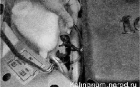
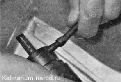

Электронасосы стеклоомывателей - снятие и установкаПроверить исправность электронасоса стеклоомывателя можно, подав на его выводы напряжение 12 В непосредственно от аккумуляторной батареи. Неисправный насос необходимо заменить. Снятие 1. Подготавливаем автомобиль к выполнению работы. Совет Если в бачке много незамерзающей жидкости, с целью экономии можно снять бачок омывателя (см. ниже) и, не снимая с него электронасос, перелить жидкость в канистру. 2. Отсоединяем от электронасоса омывателя ветрового стекла две колодки проводов (предварительно пометив колодку, подсоединенную к выводу). 
3. Поддев отверткой, извлекаем электронасос из отверстия в бачке и отсоединяем от насоса эластичную трубку. 
4. Проверяем состояние резинового уплотнителя, установленного в отверстии бачка. При необходимости замены извлекаем уплотнитель и устанавливаем новый. 5. Аналогично снимаем электронасос омывателя заднего стекла. Установка Устанавливаем электронасосы стеклоомывателей в обратной последовательности. |